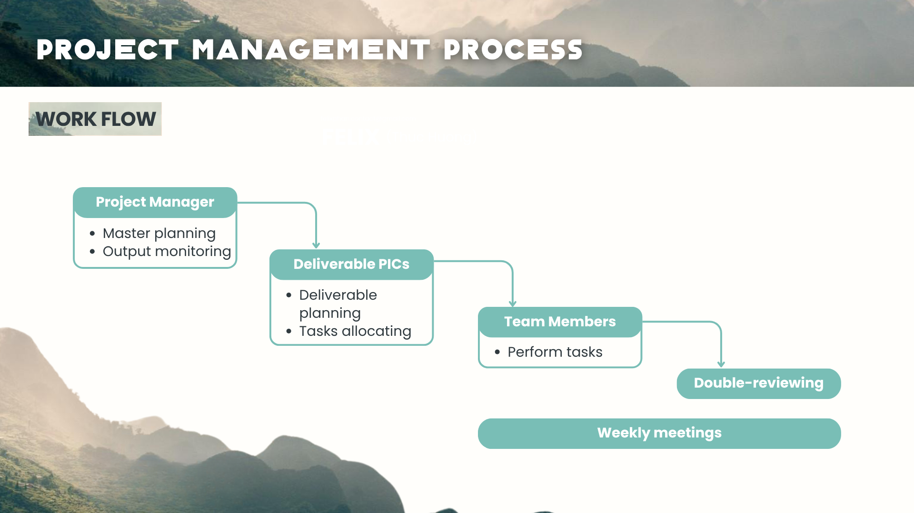
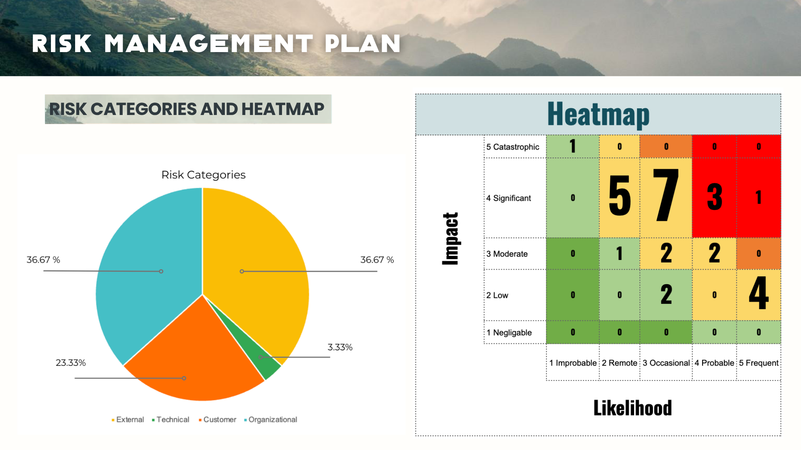
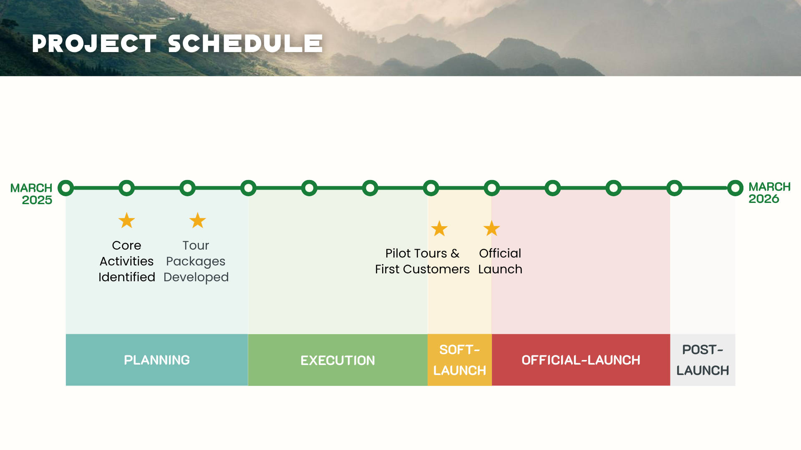
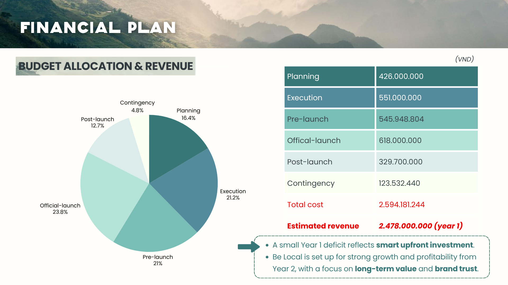

Be Local
Designing a community-based tourism venture from scope to launch.

How can tourism create cultural connection without turning culture into a commodity?
Be Local was developed as a proposed community-based tourism model for Hà Giang. The work had to balance cultural integrity, community benefit, customer experience, commercial viability and environmental responsibility.
My individual report translated the mission into scope, deliverables, people, finance, stakeholder governance, risk, quality and schedule.
Managing the work, not just describing the idea.
The workflow moved from Project Manager to deliverable PICs to team members, with double review and weekly meetings across the system.



Planning viability before launch.
The modelled financial plan totalled approximately VND 2.594 billion, with spending across planning, execution, pre-launch, launch, post-launch and contingency. These figures are planning calculations, not actual commercial results.

Explore the pitch deck.
The presentation compresses the venture, project-management process, financial plan, staffing, schedule and principal risks into an executive narrative.
Pitch deck developed by a five-person team led by Felix Phan. Hosted through Hạnh Nguyễn’s Canva account.